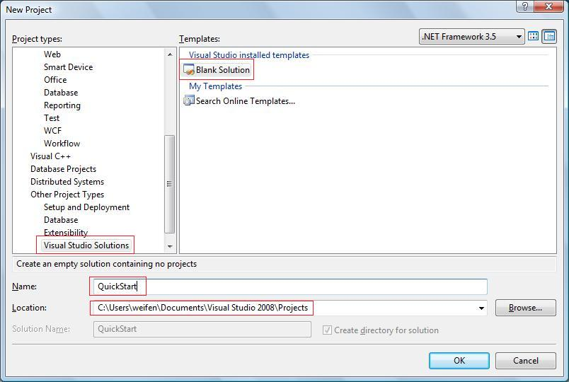

QuickStart Sample
Create an empty QuickStart Solution in Visual Studio 2008
Open Visual Studio 2008, select menu File -> New -> Project...:

In left side Project types, select Other Project Types -> Visual Studio Solutions, then select Blank Solution in Templates. Enter QuickStart as Name:
Click OK button, an empty solution named QuickStart created.
Create a new .snk key pair file
- Open Visual Studio 2008 Command Prompt from the start menu:
Microsoft Visual Studio 2008->Visual Studio Tools. - Change the current directory to the directory where the empty solution was created.
- Enter the following command to generate a new .snk file:
sn -k key.snk - Verify a new file named
key.snkcreated in the directory where the empty solution was created.
Next Steps
- @sample_publisher
- @sample_app
- @run_quickstart_sample